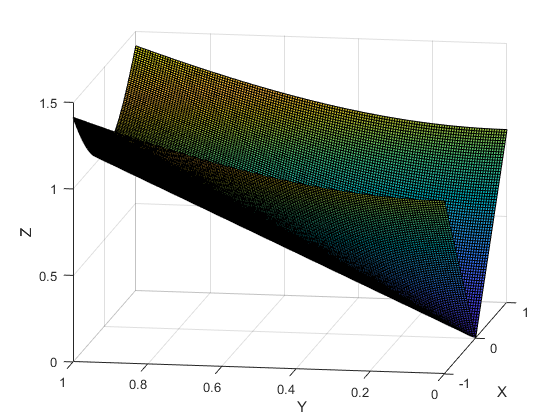

Given `z = f(x,y) = z^2 + y^2` and `R = [-1,1] X [0,1]`. Evaluate the integral of `f(x)` over R. That is: `int_(R)f(x,y) dxdy`.
Write the full expresion:
`int_(0)^(1)[int_(-1)^(1) (x^2 + y^2) dx]dy`
Keep y as a constant and integrate only with respect to x:
`int_(0)^(1)[ (x^3/3 + y^2x)|_(-1)^(1)]dy`
Replace the inner expresion evaluating in the limits of x:
`int_(0)^(1)[(1/3 + y^2)-(-1/3-y^2)]dy =`
`int_(0)^(1)[(2/3 + 2y^2)]dy`
Now integrate the obtained expresion with respect to y:
`(2/3y + 2y^3/3)|_(0)^(1)`
Replace the inner expresion evaluating in the limits of y:
`(2/3 + 2/3)-(0 + 0)`
The solid corresponding to the following figure has a volume of 4/3.
